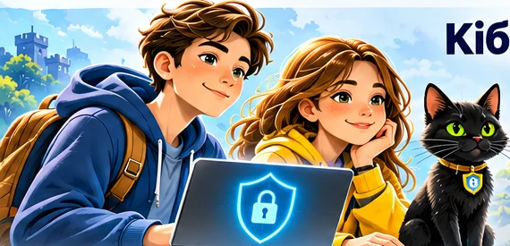
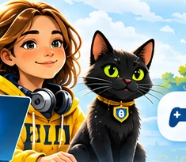
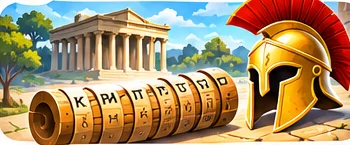

Кібербезпека та криптографія. Перші кроки
Приєднуйтеся до команди Буча: розслідуйте загадки, досліджуйте шифри, перевіряйте цифрові пастки та створюйте власні відкриття.
8 сюжетних майстерок · 2 напрями · 2 сертифікати


Знайомтеся: Буч! Кіт-провідник допомагає розслідувати цифрові загадки й відкриває три замки міні-CTF.
🛡️ Кібербезпека

Справа про зниклий смартфон
Історія, дослідження, модель і вихідний квиток
Відкрити →02Хто за екраном?
Історія, дослідження, модель і вихідний квиток
Відкрити →03
Лист із пасткою
Історія, дослідження, модель і вихідний квиток
Відкрити →04Міні-CTF: код Буча
Історія, дослідження, модель і вихідний квиток
Відкрити →🔐 Криптографія

Послання зі Спарти
Історія, дослідження, модель і вихідний квиток
Відкрити →02
Майстерня Цезаря
Історія, дослідження, модель і вихідний квиток
Відкрити →03Секретна доставка
Історія, дослідження, модель і вихідний квиток
Відкрити →04
Код котячої команди
Історія, дослідження, модель і вихідний квиток
Відкрити →Після кожної майстерки створіть вихідний квиток. Збережіть його як PDF через друк браузера. Сертифікат доступний після чотирьох майстерок одного напряму на цьому самому пристрої. Дані зберігаються локально у браузері — очищення даних або зміна пристрою скидає прогрес.